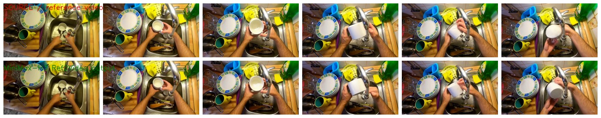
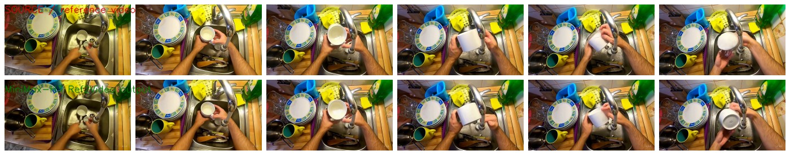
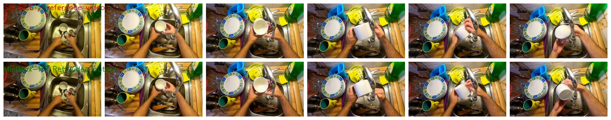

MiniMax-H3 Ref2Video QC
End-to-end smoke check for MiniMax-H3 with reference-video conditioning. GPT-5.5 judged the generated videos for basic usability: decodable video, non-static motion, no noise collapse, and preservation of the reference scene.
Reference Input
assets/h3_ref2video_qc_20260926/source_demo3_original.mp4
Specific Physical-Fix Prompt
GPT-5.5: Generated output is a normal usable video. It preserves the sink, hands, cup, camera angle, lighting, and shows coherent temporal motion without blank frames, noise collapse, or severe corruption.
Generated video
GPT-5.5 QC sheet

Blind Physical-Fix Prompt
GPT-5.5: Generated output is a normal coherent video sequence matching the reference kitchen sink scene, with visible hand and mug motion across frames and no collapse or corruption.
Generated video
GPT-5.5 QC sheet

GPT-5.5-Derived Prompt
GPT-5.5: Generated output is a normal, coherent video sequence preserving the kitchen sink scene, hands, faucet, dishes, and mug washing action with visible temporal motion. It is not blank, static, noisy, or corrupted.
Generated video
GPT-5.5 QC sheet

Artifacts
metadata/h3_ref2video_qc_20260926/summary.json
Local reusable scripts: h3_ref2video_dashscope_20260926.py and h3_ref2video_gpt55_qc_20260926.py